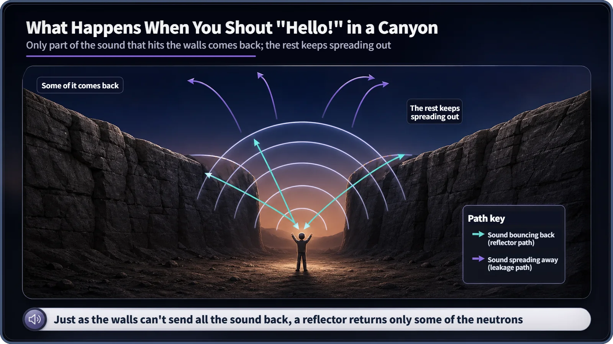
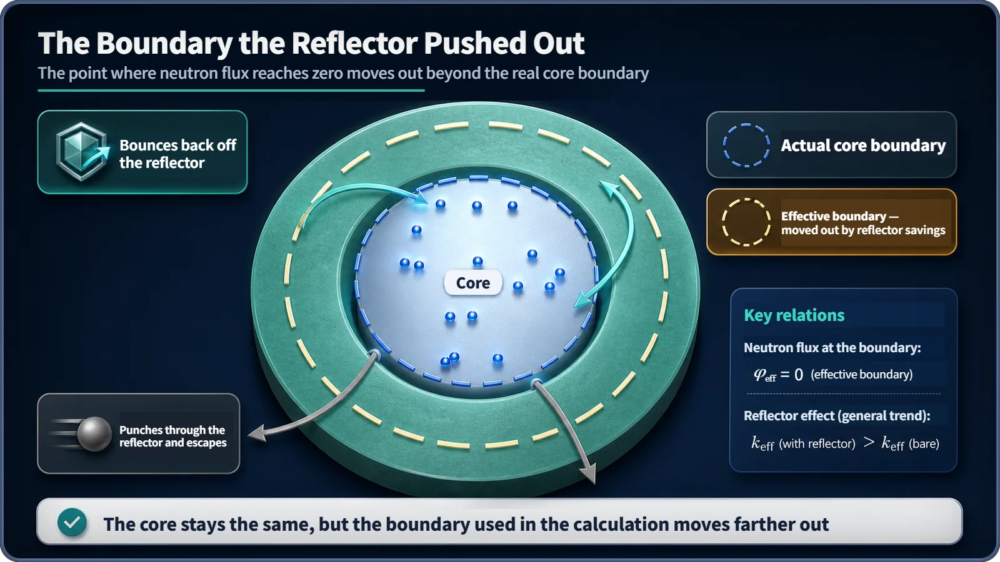

Neutron Physics & the Core · 097
Shout "Hello!" in a Canyon — Why a Reflector Changes the Critical Condition
Like a canyon echo, a reflector sends back only part of the escaping neutrons, yet that is enough to make the core behave as if it were bigger.
A reflector is a layer around the core that sends back some, never all, of the neutrons that were about to escape. That partial return pushes the point where the neutron flux reaches zero farther out, so the critical calculation uses an effective radius (actual radius plus the reflector savings), and the same fuel can reach criticality in a smaller core.
Shout "Hello!" in a canyon
Ever shouted "Hello!" into a narrow canyon? After a brief silence your voice comes back as an echo, but quieter than the shout, fading bit by bit until it's gone. If the walls were a perfect mirror, the echo would ring as loud as the original forever. It doesn't, because only part of the sound that hits the walls comes back; the rest scatters along the rock or keeps spreading into the sky.
The reflector works remarkably like that echo. It surrounds a reactor core like a canyon wall, bouncing back neutrons that were about to escape, though, like the wall, never all of them. Yet this "returns only some" device changes the very condition under which a reactor reaches criticality.
Not all the sound that hits the wall comes back
The probability that a neutron stays in the core instead of leaking out is the non-leakage probability, and higher is better. What if something around the core could send some of those escaping neutrons back? That something is the reflector.

Common reflector materials include ordinary (light) water, heavy water, graphite and beryllium. They overlap with the materials used inside the core as moderators, which slow neutrons down, and that's no coincidence: if a neutron heading out of the core is still fast, the core is better off if it gets slowed down in the reflector and comes back as a slow neutron.
Of the neutrons that hit the reflector, some scatter back toward the core, some are absorbed by the reflector material itself, and some bounce around and eventually punch right through the reflector and escape for good. So a reflector is "a wall that sends things back," not "a wall that blocks everything."
The core doesn't get bigger, but it acts as if it did
In a bare core with no reflector, the neutron flux (a measure of how many neutrons are crowded at a given spot) doesn't drop off abruptly at the core's physical boundary. It reaches zero only at an imaginary point slightly outside it, the extrapolated boundary.
Wrap the core in a reflector and the picture changes. Because some neutrons bounce back, the flux just outside the core falls off much more gently than in a bare core. It looks as if the zero point had been pushed much farther out, into the reflector. That distance has a name: the reflector savings.
Effective radius = actual core radius + reflector savings
The critical size is found from the condition "geometric buckling = material buckling." With a reflector, the effective radius takes the place of the actual radius. So even with the same fuel-and-moderator composition (the same material buckling), the reflected core satisfies the condition with a much smaller actual radius. Nothing was actually enlarged, yet the core behaves as if it had grown. That is precisely what it means to say a reflector "changes the critical condition."

So is a thicker reflector always better?
No. Once the reflector is thicker than roughly the average distance a neutron travels while it scatters a few times and gets absorbed, extra thickness barely increases the reflector savings; it levels off near a particular value. Just as a deeper canyon doesn't make the echo infinitely loud, a neutron that wanders deep into the reflector has already scattered many times and been absorbed or lost its direction, so its chance of returning keeps shrinking. A reasonably thick reflector already captures most of the effect.
Specific numbers, such as how much savings a reflector of so many centimeters provides, are deliberately left out: they vary widely with reactor type, reflector material and neutron energy spectrum, and an example value could be mistaken for a real design value.
Common mix-ups
| Mix-up | What is actually true |
|---|---|
| "A reflector is a perfect mirror." | It returns only some neutrons; the rest are absorbed or escape. That is why its effect depends on thickness and saturates. |
| "A reflector is a radiation shield." | The reflector faces inward and helps the critical condition. A shield faces outward and protects people and equipment; a separate thick concrete or steel shield sits outside the reflector. |
| "Reflector and moderator must be different materials." | Water or graphite often serves as moderator inside the core and as reflector around it. Only the role differs. |
| "A reflector eats into the safety margin." | It is placed deliberately, and its reactivity effect is included in the core design along with fuel enrichment and control-rod layout from the start. |
Where reflectors matter
The reflector is mainly a design matter. Its material and thickness are settled early, when the core size and the fuel needed are decided; it isn't changed during operation. Because it lets the core be smaller, or use lower enrichment at the same size, it also supports efficient use of fuel, and it matters especially for relatively small cores such as research reactors and small reactors. A reflector also raises the neutron flux near the core edge somewhat compared with a bare core.
Key takeaways
A reflector returns only part of the escaping neutrons, but that pushes the effective boundary out by the reflector savings. With the same composition, a reflected core reaches criticality at a smaller actual size, as if it had grown without being enlarged. The savings grow with thickness but soon saturate, and a reflector is a different thing from a radiation shield.